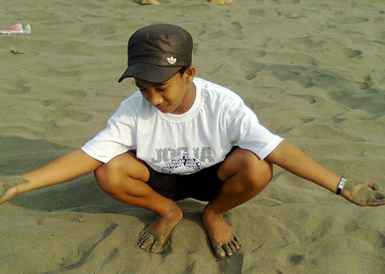
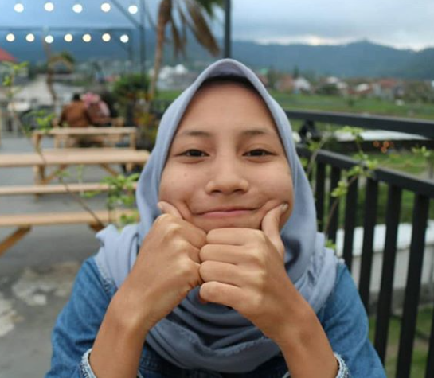

Kawasan wisata Alun-alun Batu ini sudah banyak wahana permainan yang siap
memanjakan para wisatawan yang memilih berlibur dan mengunjungi kawasan wisata ini.
Ditambah lagi dengan adanya karya seni yang sangat unik dipamerkan di sekitar kawasan wisata tersebut.
Tentu saja tujuan dari desain serta konsep Alun-alun Batu ini untuk memberikan hiburan kepada masyarakat
dan juga kepada wisatawan yang berlibur ke kawasan wisata ini.
"Alun-alun luas, sejuk dan terdapat arena bermain u/ anak2, ada bianglala, aneka karakter lampion (Sapi, Kelinci, apel, wortel,dll) ada juga orang berkostum Pocong, hantu noni-noni hingga super hero …"

"Alun-alun luas, sejuk dan terdapat arena bermain u/ anak2, ada bianglala, aneka karakter lampion (Sapi, Kelinci, apel, wortel,dll) ada juga orang berkostum Pocong, hantu noni-noni hingga super hero. Jika kalian mau membawa anak kecil, …"

"Kota mana yang tidak iri dengan keindahan Alun-Alun Kota Batu. Wajahnya asri, banyak arena bermain, serta fasilitasnya lengkap. Inilah gambaran alun-alun yang diidamkan banyak kota di Indonesia, warga Batu berhak untuk bangga memiliki …"
ULASAN
"Alun-alun luas, sejuk dan terdapat arena bermain u/ anak2, ada bianglala, aneka karakter lampion (Sapi, Kelinci, apel, wortel,dll) ada juga orang berkostum Pocong, hantu noni-noni hingga super hero …"
"Alun-alun luas, sejuk dan terdapat arena bermain u/ anak2, ada bianglala, aneka karakter lampion (Sapi, Kelinci, apel, wortel,dll) ada juga orang berkostum Pocong, hantu noni-noni hingga super hero. Jika kalian mau membawa anak kecil, …"
"Kota mana yang tidak iri dengan keindahan Alun-Alun Kota Batu. Wajahnya asri, banyak arena bermain, serta fasilitasnya lengkap. Inilah gambaran alun-alun yang diidamkan banyak kota di Indonesia, warga Batu berhak untuk bangga memiliki …"